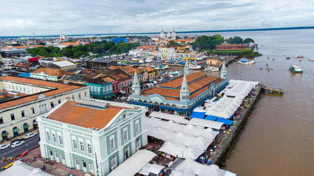

O Pará é um estado localizado na Região Norte do Brasil, conhecido por sua vasta extensão territorial e por abrigar uma parte significativa da floresta amazônica. Sua capital, Belém, é um importante polo cultural e comercial, famosa por sua culinária típica, como o açaí e o tacacá, e por eventos como o Círio de Nazaré, uma das maiores festas religiosas do país. O Pará tem uma economia diversificada, com destaque para a mineração, especialmente de bauxita, e a agricultura, com a produção de soja, cacau e açaí. Além disso, o estado é fundamental para a preservação ambiental, com várias áreas de proteção, incluindo o Parque Nacional de Anavilhanas, um dos maiores arquipélagos fluviais do mundo.
